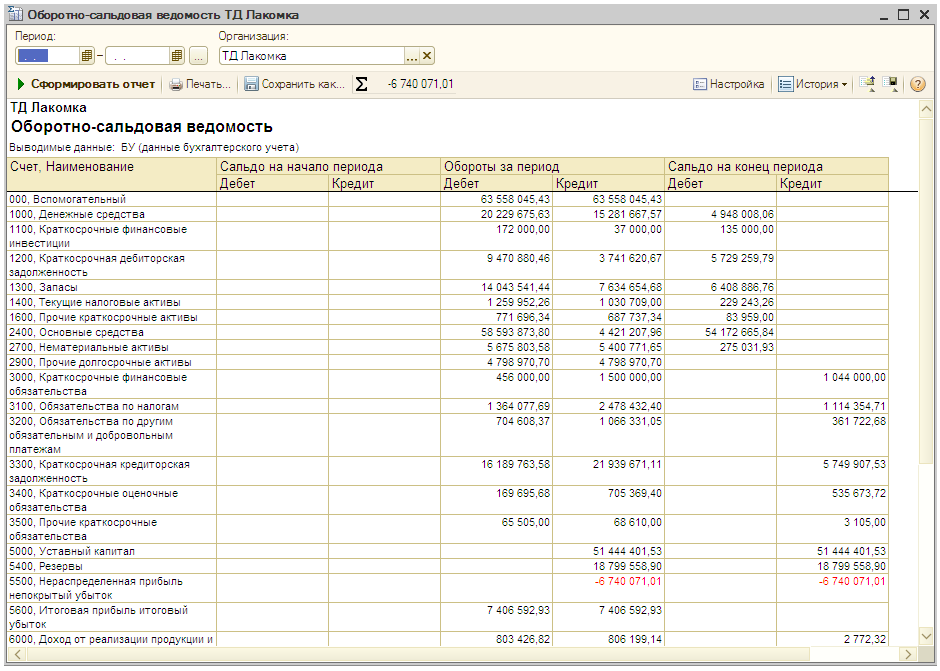
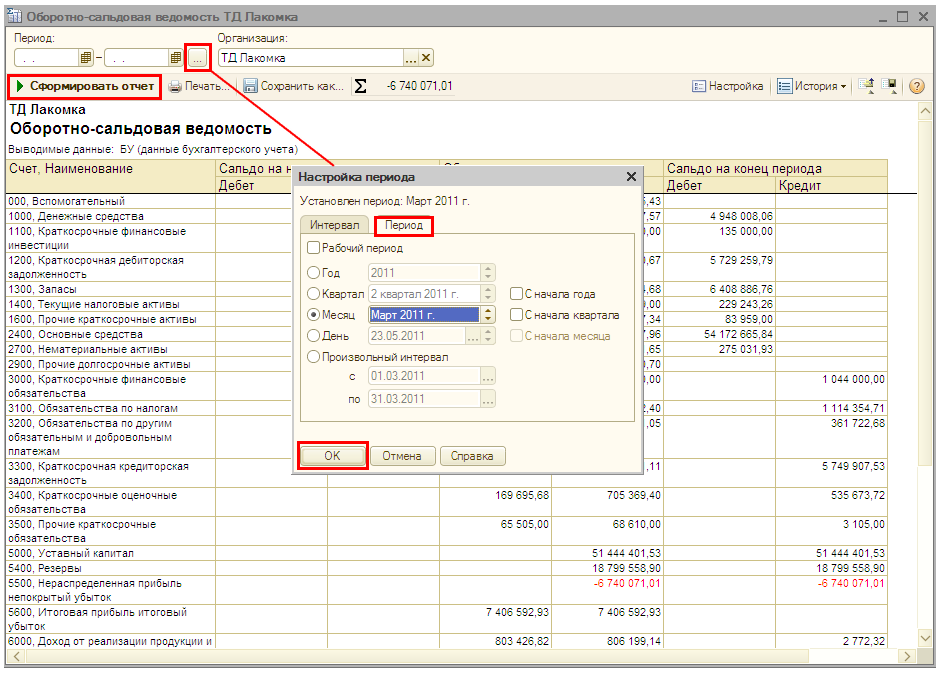
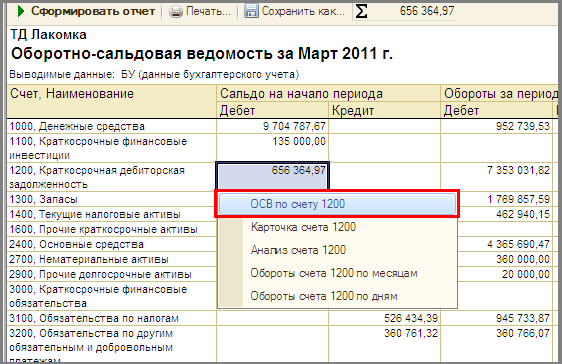
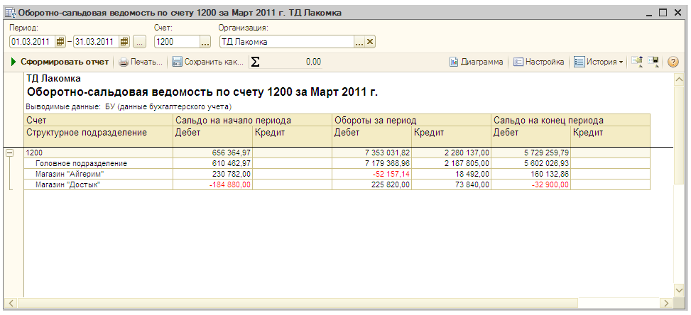
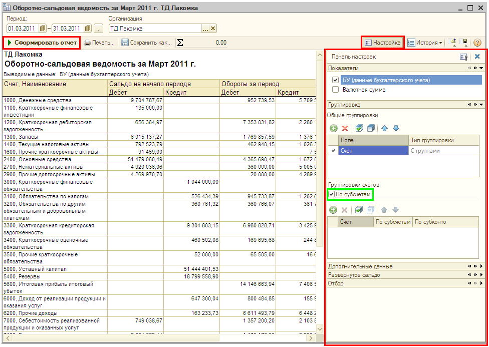
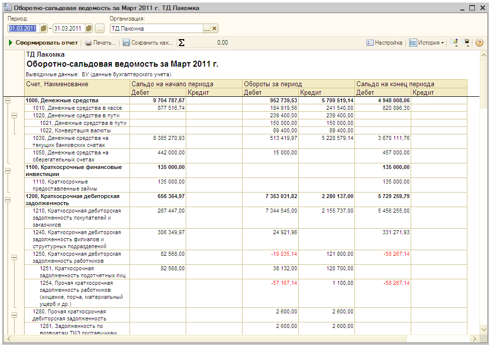

Получение данных по остаткам и оборотам счетов бухгалтерского и налогового учета
Для получения и анализа данных по остаткам и оборотам счетов бухгалтерского и налогового учета в «1С:Бухгалтерии 8 для Казахстана» используются стандартные отчеты (меню Отчеты). Для каждого вида учета (бухгалтерского и налогового) предусмотрены свои наборы стандартных отчетов. Любой отчет может быть сформирован для определенной организации и для определенного периода времени. Рассмотрим на примере отчета Оборотно-сальдовая ведомость процедуру формирования стандартных отчетов.
Отчет Оборотно-сальдовая ведомость содержит для каждого счета бухгалтерского учета информацию об остатках на начало и конец периода и оборотах по дебету и кредиту за установленный период.
- Для того чтобы сформировать отчет, выберите в меню Отчеты пункт Оборотно-сальдовая ведомость (бух.).
 - Для установки нужного периода отчета нажмите кнопку справа от поля Период. В открывшемся окне настройки установите период отчета так, как показано на рисунке. Нажмите кнопку ОК в нижней части окна настройки периода. Нажмите кнопку Сформировать отчет в командной панели формы отчета.
 - При просмотре оборотно-сальдовой ведомости можно получить более детальную информацию по интересующему счету. Если дважды щелкнуть мышью по строке с записью счета, то на экран компьютера будет выведен список для выбора одного из нескольких отчетов, которые могут быть сформированы для данного счета, например отчет Оборотно-сальдовая ведомость по счету.
ПРИМЕЧАНИЕ
Отчет Оборотно-сальдовая ведомость по счету (меню Отчеты — Оборотно-сальдовая ведомость по счету) показывает начальные и конечные остатки, а также обороты за период для выбранного счета. |
Для получения отчета Оборотно-сальдовая ведомость по счету для счета 1200 «Краткосрочная дебиторская задолженность» дважды щелкните по строке с записью счета 1200. В открывшемся списке выберите «ОСВ по счету 1200».

Результат:

- С помощью кнопки Настройка… командной панели формы отчета открывается вспомогательная панель настроек, где можно задавать различные условия детализации отчета.
Для детализации данных отчета по субсчетам нажмите кнопку Настройка… и установите в панели настроек флажок Группировки счетов: По субсчетам так, как показано на рисунке. Нажмите кнопку Сформировать отчет в панели формы отчета.

Результат:

Только что Вы научились получать данные по остаткам и оборотам счетов бухгалтерского и налогового учета.
Из следующего раздела Вы узнаете, как сформировать бухгалтерский баланс.